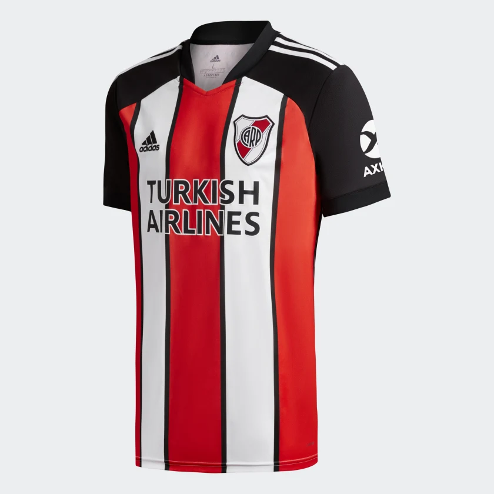
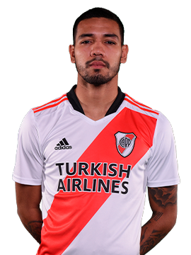
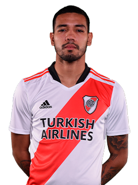
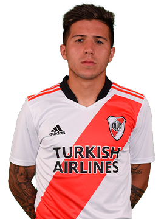
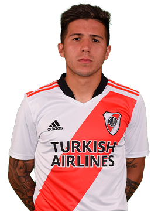
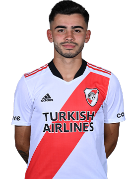
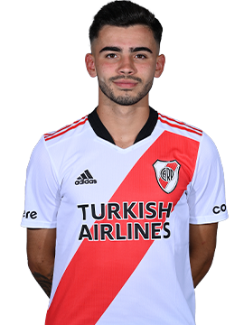

Club Atletico River Plate
Historia
El Club Atlético River Plate es una entidad polideportiva con sede en Buenos Aires, Argentina. Fue fundado el 25 de mayo de 1901 en el barrio de La Boca, tras la fusión de los clubes Santa Rosa y La Rosales, y su nombre proviene de la antigua denominación que se le daba en el inglés británico al Río de la Plata. Su principal actividad es el fútbol masculino profesional, el cual participa en la Liga Profesional de Fútbol. Disputa sus partidos en el estadio Mâs Monumental, el de mayor capacidad del país y el sexto de América, con una capacidad para 72 054 espectadores.
Estadio Monumental
El Estadio Monumental, también conocido como Estadio Mâs Monumental por cuestiones de patrocinio, fue inaugurado el 26 de mayo de 1938 en la Ciudad de Buenos Aires, más precisamente en el barrio porteño de Núñez. En 1933 Antonio Vespucio Liberti asumió su primera presidencia dentro del club, y con ella la idea de mudar la localía. El 31 de octubre de 1934 se firmaron los boletos de compra de los terrenos de 83.950 metros cuadrados ubicados en el barrio de Núñez, con un precio de $ 569.403. El 27 de septiembre de 1936 bajo la dirección del estudio Aslan y Ezcurra Arquitectos, comenzaron las obras del estadio. En la fecha de la inauguración se llevó a cabo un encuentro amistoso frente a Peñarol de Uruguay. Aquel día River venció a los uruguayos por 3-1. La primera tribuna en ser construida fue la actual San Martín. Luego se realizó la Belgrano, quedando en medio de ambas el espacio para hacer las tribunas Colonia (Sívori) y Centenario. Por ende, esta última fue la tercera en ser levantada. Durante 1977 y 1978, se construyó la bandeja superior de la tribuna norte y transfomó las bandejas inferiores en plateas, para la Copa Mundial de Fútbol de 1978. Desde 1986, el estadio lleva el nombre del presidente que inició su construcción, Antonio Vespucio Liberti. La capacidad actual del estadio es de 70 074 espectadores, luego de las remodelaciones realizadas en el año 2019. Cabe destacar que existen registros de que han asistido más de 80 000 personas en partidos de gran relevancia, tales como en el último encuentro de la Copa América 1959 entre Argentina y Brasil, y la final de la Copa Libertadores 1996 entre River y el América de Cali.
Camiseta Titular

Camiseta Suplente
Plantilla
Arqueros

Defensores
 



Volantes
 

 

Delanteros

Director Técnico